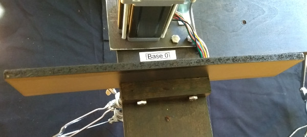

Setup and assembly
Software setup
- Get the code from GitHub. Click the
Clone or download button and then Download ZIP.
- Extract the zip archive in your
~/Documents folder and rename the folder to loeffler-h.
- This documentation will now be available locally at
~/Documents/loeffler-h/README.html.
- Install SuperCollider.
- Start the
SuperCollider IDE and open the file ~/Documents/loeffler-h/supercollider/run.scd.
- Follow the instructions to install the class.
- Read the rest of the
run.scd file for details on running the software once the hardware is assembled.
Equipment required
- 8-channel mixer
- Stereo PA
- 4 × double-braced percussion stands, with 1 inch (25.4mm) diameter upper tube
- XLR and TS jack cables
- Headphone amplifier for click-track
Included
- ratchet with 8mm (M5) socket
- mini screwdriver set
- hex key set
Required
- flat-head screwdriver
- Phillips-head screwdriver
- 8mm (M5), 10mm (M6), 13mm (M8) spanners (or adjustable)
- gaffer tape
Parts
Peli Storm Case iM2500
55 × 36 × 23cm, 15kg
- 2 × Leadshine Power Supply SPS487
- 4 × Leadshine Stepper Drivers EM806
- 4 × SY60STH86 Stepper Motors
- Electronics unit, consisting of:
- 4 × Pololu A-Star 32U4 Microcontrollers
- Anker 4-port USB hub
Hardcase HN40W
102 × 31 × 31cm, 17kg
- 1 × LX1203 AC/DC power adapter 12V
- 4 × Balluff BES M08EG Inductive Sensors
- 20 × microtonally tuned tuning forks
- 5 × beaters
- 1 × beater spare centre part
- 4 × Steel mounting bracket
- 4 × Plywood base
- 2 × Plywood brace
- 4 × Perspex guide
- 4 × Chipboard tablet support
- 4 × Resonance box with attached contact microphone
- 1 × Spare contact microphone
- 2 × Telephone pickup microphone with 6.25mm jack socket connections
- 4 × Telephone pickup microphone with 3.5mm jack plug connections
- 2 × Mono 3.5mm→6.25mm plug adapter
Bolts, Nuts, Washers
- 16 × M5 long threaded bolts with attached lock-nuts
- 20 × M5 washers
- 32 x M5 hex nuts
- 4 × M5 12mm screws
- 8 × M5 25mm screws
- 24 × M6 40mm bolts
- 24 × M6 hex nuts
- 24 × M6 17mm washers
- separate bag containing spares of all of these
Cables
- 1 × Euro plug kettle cable
- 1 × UK plug kettle cable
- 1 × UK→Euro power adapter
- 1 × UK→CH power adapter
- 1 × USB extension cable
- 6 × 5-pin XLR extension cable
- 1 × 3.5mm jack extension cable
- 1 × USB→RJ11 serial adapter cable (not required for normal operation)
Hardware assembly
Attach Motors to steel brackets, matching motor numbers and orienting the motor cables to the wide side of the bracket. Use four long M5 bolts, with washers and nuts. Tighten diagonally opposite bolts in order. Ensure the lock-nuts on the top of the motors are flush with the bolt. Tighten well as this will not be accessible later.

Attach Sensors to steel brackets, matching the numbers. Use one 12mm M5 screw, with a washer and nut. Tighten well as this will not be accessible later.

Attach Motor assemblies to Base boards on outer bolts with two 17mm washers and M5 nuts. Do not tighten yet.

Insert into percussion stands and adjust all four motors to the same height.
Join Motor 0 to Motor 1 with Brace A (underneath) using four M6 bolts. Include a washer on the brace side.

Join Motor 2 to Motor 3 with Brace B.
Tighten all 6 nuts on the underside of each motor assembly.
Attach Beaters to each motor and firmly tighten with the hex key. The top of the motor shaft should be flush with the top of the beater.

Check the beater can rotate freely without hitting the Sensor. The screw on the beater should pass directly over the sensor with a clearance of 1 mm. The sensor can be adjusted to align if necessary by bending the metal bracket or changing the height with the nuts. The depth of the beater screws can also be adjusted with a screwdriver.
Attach perspex Guides with 25mm M5 screws and nuts. Do not overtighten.

If using a tablet score reader, attach the Tablet supports using 35mm M6 bolts and nuts.

Electrical connections
Carefully remove the top two layers of packing foam from the driver box and store safely. Do not run the motors with this foam in place!
Connect output cables from the Driver box to the Motor and Sensor cables. There are four 5-pin XLR extension cables included if necessary for the motor cables; the sensor cables can be extended with standard 3-pin XLR microphone cables. Keep cable runs as short as possible and take care never to stress the cable attachments to the electronics and driver units.
Gently plug the Electronics Power adapter into the barrel-jack socket on the left-hand end of the electronics unit.

With the Main Power off, plug in the Electronics Power. The LEDs on the bottom of each sensor should be on unless the beater is over it. Check the beaters rotate freely and the sensor lights switch on and off accordingly. Adjust sensors if necessary. Leave the beaters turned so that one end is above the guide.
Unplug the Electronics Power and plug in the Main Power. Green LEDs should show on Power A, Power B and the four Drivers. Check that the four beaters are now held by the motors.
With the Main Power on, re-plug the Electronics Power. The four beaters should rotate to the sensor position and stop.
When powering on each time, switch on the Main Power first, then the Electronics Power, then lastly plug in the USB computer connection.
Audio setup
Attach the four Telephone microphones to the four Motors (audience side) with gaffer tape. Wrap the tape all the way around the motor or it will melt and fall off.
Connect the Telephone microphones to a mixer with TS cables (mono jack).
Connect the Contact microphones in each Resonance box to a mixer with TS cables (mono jack).
The SuperCollider patch will output a mono click-track on channel 1 of your computer's audio interface.
It can be effective to tightly bandpass filter the Resonance box inputs around the specific frequencies of the tuning forks played on each box.
Operation details
Click level adjustment
The SuperCollider patch plays the score of H as entered in the file score.csv. This should not need to be edited, except if you need to vary the level of the click.
To do this, open the file in a spreadsheet application such as LibreOffice Calc. (Apple Numbers may work, but sometimes adds formatting characters which might corrupt the file.) The entries in the fifth column clickdb specify the level of the click in dB. Enter the required level on the row of the bar/beat number.
Action syntax
Each Motor action is read from score.csv. The actions are encoded as a sequence of characters according to the following schema:
command [halfturns:H] [dir:l|r] pitch:P[-P][-P] [duration:D][-D] [recentre:c|n]
Commands
t — turn, e.g. t 1 l 69 = one halfturn left at pitch 69.d — duration turn, e.g. d r 60 3 n = right turning for 3 beats at pitch 60, stop without finding sensor.u — turn until next command, e.g. u l 64 = left turning at pitch 64 until next command sent.s — stop (for use after a u command).g — duration gliss, e.g. g r 57-69 1.5 c = right turning gliss from pitch 57-69 over 1.5 beats, find sensor afterwards.q — double gliss, e.g. q l 48-60-54 1-0.33 n = left turning double gliss from pitch 48-60 over 1 beat, then from pitch 60-54 over 1/3 beat, stop without finding sensor.T — timed turn, e.g. T 2 r 72 3 = two halfturns right over 3 beats. N.B. the pitch number is necessary but ignored.G — gliss, e.g. G 3 l 66-60 = gliss from pitch 66-60 in 3 halfturns left. Duration is indeterminate.S — set sustain duration, e.g. S 0.25 = set sustain duration to a quarter of a beat.
Shortcut
h = single halfturn at fastest speed, this is equivalent to t 1 r 72
Halfturns
- 1-19 number of halfturns to complete
Direction
Pitch
Motor speed is indicated by the resultant MIDI pitch. The range is three octaves from 36 to 72 including quartertones.
Duration
- in beats at current tempo
Recentre
c = recentren = do not recentre
Troubleshooting
- Check beaters rotate freely and are attached to the motor shaft firmly.
- Check sensor alignment and clearance.
- Check driver DIP switches against following list. Rotary switch to position
C.
OFFOFFONONOFFONONON